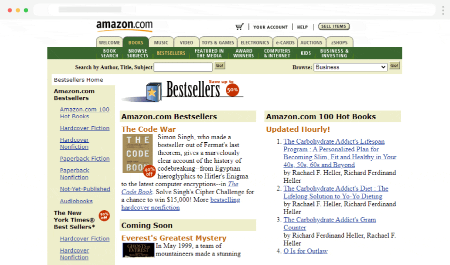

The Evolution of E-commerce Design
In the late 1990s, web design was heavily restricted by slow dial-up internet speeds and limited CSS capabilities. Most websites relied on complex HTML tables to organize content, leading to the "busy" and text-heavy look seen below.

Figure 1: Amazon.com homepage (1999)
As seen in this example, Amazon utilized a multi-column layout with a sidebar for navigation and a central area for bestsellers. This was a revolutionary way to browse products before the invention of modern mobile-responsive grids.